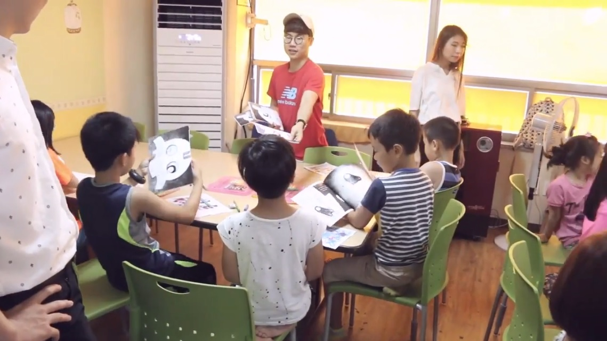
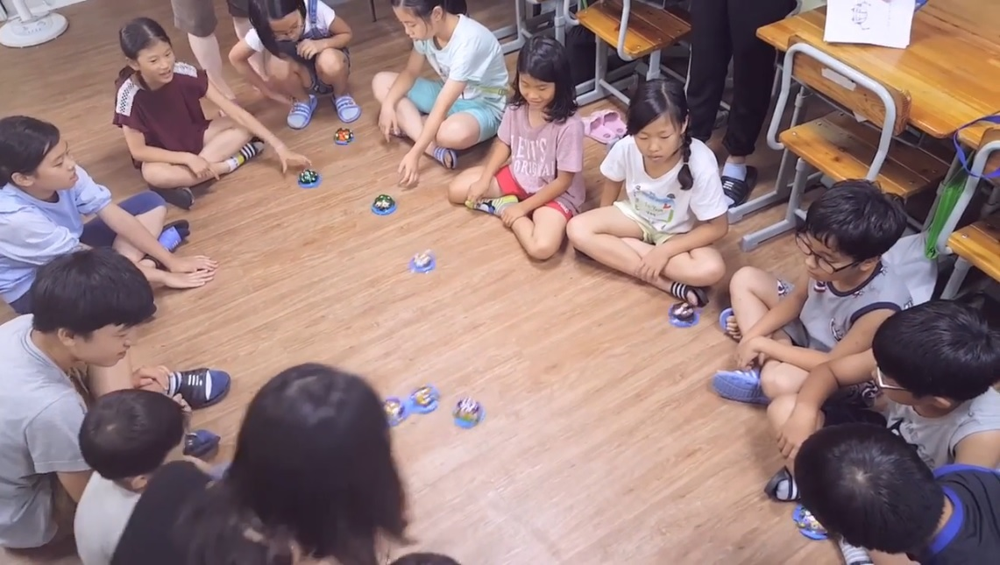
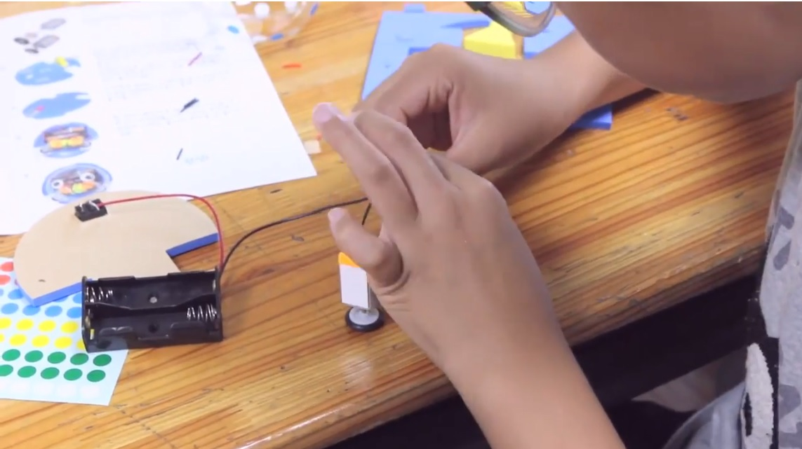
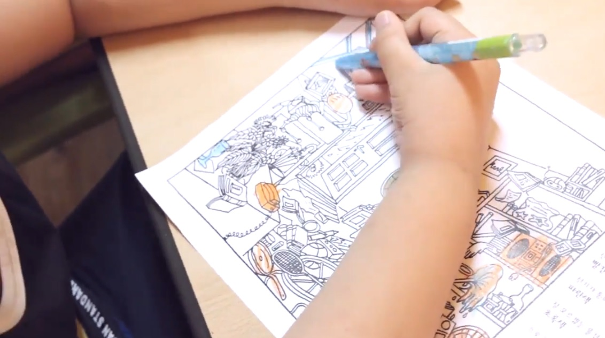

My role: class planning, teaching
Collaborator: Aram Jang, Soyoung Kim, Younji Shin, Hyun Jo, and Ilhwan Hwang
Collaboration voluntary project with Korea National University of Arts students.
Project aims enhancing elementary student's interest and understanding in science with picture book, drawing practice and making a toy.
During one month before the class, every member prepared his/her own class contents individually.
As taking part of class planning, experience of science communication suggested making a toy which includes actual movement with motors and created explanation of basic concept of electromagnetism.
After preparation, all members gathered and rehearsed class including drawing and hands-on activity.




Team visited Charmsarang Regional Children's Center and Haemaji Regional Children's Center, where are located in Pohang.
Each class took around 4 hours and team met about 40 children in total.
Through class and activities, class delivered basic concept of electromagnetism such as current, voltage, resistance and electron to the children.
Children filled the picture book and made a toy with diverse styles and movements.
After the end of the class, children effectively linked their knowledge learned from the class to describe the movement of the toy.